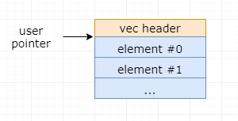
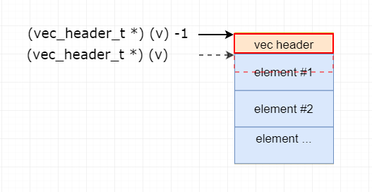
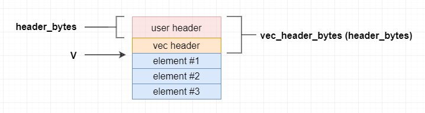
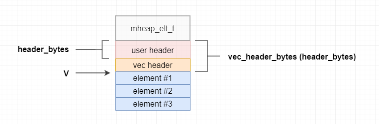

vec 数据结构是VPP的基础，在整个代码中大量使用这个基础结构，如果想要读懂VPP代码，那么首先需要熟悉 vec 的定义以及其对应的操作。本文分析的是 VPP stable/1609 的代码。
vec 简介
typedef struct {
u64 len; // len 表示向量元素的个数，而不是分配的字节数
u8 vector_data[0];
}vec_header_t;
用户指针包含0号vector元素的地址。NULL指针的vector是合法的，这表明它是一个长度为零的vector。
可以通过宏vec_reset_length(v)将一个已经分配的vector重置为0，也可以通过将vector长度字段设置为0来实现重置功能，比如 _vec_len(v) = 0 。不过最好使用 vec_reset_length(v) 来实现，因为它能够正确处理 NULL 指针。
一般情况，vector没有头部，头部允许其它数据结构以vector为基础进行构建。
用户可以通过 vec_*_aligned 宏来指定元素对齐。
注 ： 用户自定义的头默认对齐到 sizeof (vec_header_t) 边界， vec_*_aligned 是用来指定数据对齐的。头部和数据都有对齐的情况如图：
vector元素可以是任何C语言的类型，比如int, dobule, struct等。对于构建在vector之上的数据结构也是成立的。比如heap, pool等。
许多带有 _a 的宏，支持向量数据对齐，带有 _h 的宏，支持非零头部长度的向量，_ha 同时支持这两种情况。('a' 表示 aligned ， 'h' 表示 header )。
一个常见的编程错误是，记录指向某个向量第i个元素的指针，然后又对向量进行扩展，向量是按3/2进行扩展的，内存会重新申请，之前记录的地址可能已经不正确了，这样的代码只能在某些时候工作。应该记录的是向量的索引，索引是不会变的。
（宏）函数说明
vector使用了大量的宏函数，宏函数的优势是可以支持任意数据类型。
_vec_find(v)
#define _vec_find(v) ((vec_header_t *) (v) - 1)

该宏函数的功能是获取 vector 的头部指针。
传入vector第一个元素的地址，将该地址强转成 vec_header_t 类型，然后向上偏移一个 vec_header_t 的大小，这个时候得到的指针指向的就是vector的头部指针。
_vec_round_size(s)
#define _vec_round_size(s) \
(((s) + sizeof(uword) - 1) & ~(sizeof(uword) - 1))该宏函数的功能是传入一个大小s，对s进行8字节对齐，并向上取整。（注：sizeof(uword) = 8）。
如果大小为12，那么 (12 + 8 - 1) & ~(8-1) = 19 & ~7 = 0x13 & 0xf8 = 0001 0011 & 1111 1000 = 0001 0000 = 0x10 = 16
vec_header_bytes(s)
always_inline uword vec_header_bytes(uword header_bytes) {
return round_pow2(header_bytes + sizeof(vec_header_t), sizeof(vec_header_t));
}
该宏函数的功能是传入用户自定义头部实际大小，计算出对齐后的头部大小，因为没有指定对齐字节数，该函数默认以vector的头部 sizeof(vec_header_t) 大小来对齐（即8字节）。
round_pow2(s,a)
always_inline uword round_pow2 (uword x, uword pow2) {
return (x + pow2 - 1) & ~(pow2 - 1);
}该宏函数的功能是根据指定的字节大小来计算对齐的值。
参数取名为 pow2 意味着这个参数的值应该是 2 的幂。对齐算法的计算过程同 _vec_round_size。_vec_round_size 默认以 sizeof(uword) 大小对齐， round_pow2 可以指定的 pow2 大小对齐。
vec_header(v, s)
always_inline void *
vec_header (void *v, uword header_bytes)
{
return v - vec_header_bytes (header_bytes);
}

该宏函数的功能是获取用户自定义头部指针。
给定一个vector的起始地址，同时给出用户自定义头部的长度，该函数返回用户自定义头的起始地址。由上面 vec_header_bytes 函数可知，该地址默认以 sizeof(vec_header_t) 对齐。
vec_header_end(v, s)
always_inline void *
vec_header_end (void *v, uword header_bytes)
{
return v + vec_header_bytes (header_bytes);
}
该宏函数的功能是获取用户头部的结束位置（也就是vector元素的起始位置）。这里的 v 是用户头部的起始地址，不是vector元素的其实地址。
给定用户头部起始地址，同时给出用户自定义头部长度，该函数返回vector元素的起始地址。
vec_aligned_header_*
always_inline uword
vec_aligned_header_bytes (uword header_bytes, uword align)
{
return round_pow2 (header_bytes + sizeof (vec_header_t), align);
}
always_inline void *
vec_aligned_header (void *v, uword header_bytes, uword align)
{
return v - vec_aligned_header_bytes (header_bytes, align);
}
always_inline void *
vec_aligned_header_end (void *v, uword header_bytes, uword align)
{
return v + vec_aligned_header_bytes (header_bytes, align);
}
这一组函数与上面的函数功能类似，不同的是这一组函数需要自行指定对齐的字节。由于对齐算法调用的仍然是 round_pow2 ，所以align的值应该是2的幂。
_vec_len(v)
#define _vec_len(v) (_vec_find(v)->len)该宏函数在使用中有两个功能，第一个是获取vector的长度，另一个功能是设置vector的长度。在VPP的代码中主要用来设置vector的长度。
先通过 vec_find 获取 vector的头部，然后取出 len 的值。 _vec_len(v) 没有检查空指针，不过它可以作为 “左值”来用，（如，_vec_len(v) = 99）。这里的长度是值vector元素的数量，不是占用字节的大小。
vec_len(v)
#define vec_len(v) ((v) ? _vec_len(v) : 0)该宏函数功能用来获取vector的长度。
这个宏函数对空指针进行了检查，同时这个宏函数不能作为左值来用。如果搞不清 _vec_len 和 vec_len 的区别，就用 vec_len 。这里的长度是值vector元素的数量，不是占用字节的大小。
vec_reset_length(v)
#define vec_reset_length(v) do { if (v) _vec_len (v) = 0; } while (0)该宏函数的功能是将vector的长度重置为0。该宏函数对空指针进行了判断。
vec_bytes(v)
#define vec_bytes(v) (vec_len (v) * sizeof (v[0]))该宏函数计算所有vector元素占用的字节数，计算方法为：vector元素的个数 * vector每个元素占用的字节数。这里的字节大小是指当前vector元素占用的字节大小，不是内存分配的字节大小。其值应该小于等于内存分配的字节大小。
vec_capacity(v,b)
#define vec_capacity(v,b) \
({ \
void * _vec_capacity_v = (void *) (v); \
uword _vec_capacity_b = (b); \
_vec_capacity_b = sizeof (vec_header_t) + _vec_round_size (_vec_capacity_b); \
_vec_capacity_v ? clib_mem_size (_vec_capacity_v - _vec_capacity_b) : 0; \
})该宏函数的功能是获取vector分配的内存有多少字节可以用来存储元素。
传入vector元素首地址，同时传入vector元素自定义头大小。将vector强转成 void * 类型，对传入的自定义头进行（8字节）对齐，然后计算出内存管理头部偏移 _vec_capacity_b 用vector的首地址减去内存管理偏移地址，得到内存管理的结尾地址，最后通过 cli_mem_size 计算出整个内存的大小。该内存的大小不包括头部大小。
vec_max_len(v)
#define vec_max_len(v) (vec_capacity(v,0) / sizeof (v[0]))该宏函数的功能是计算指定的vector一共可以容纳多少个元素。
用vector内存的可用字节数除以每个元素所占用的字节数，即可得到可以容纳多少个元素。
vec_end(v)
#define vec_end(v) ((v) + vec_len (v))该函数的功能是计算vector末尾的地址，也就是最后一个元素的结束地址。
vec_is_member(v,e)
#define vec_is_member(v,e) ((e) >= (v) && (e) < vec_end (v))
该宏函数判断对于给定的元素 e 是否在 vector v 中，判断的依据是，如果指定元素的地址在vector的地址范围内，那么该元素就属于这个vector。
vec_elt_at_index(v, i)
#define vec_elt_at_index(v,i) \
({ \
ASSERT ((i) < vec_len (v)); \
(v) + (i); \
})
该宏函数用来返回第 i 个元素的指针，同时确保 i 的取值不会超过vector的长度。
vec_elt(v,i)
#define vec_elt(v,i) (vec_elt_at_index(v,i))[0]
该宏函数是对上一个宏函数的扩展，用来取第 i 个元素的内容。（通过对指针取下标0的方式，可以获取该指针指向的内容，同 '*' 运算符）
vec_foreach(var, vec)
#define vec_foreach(var,vec) for (var = (vec); var < vec_end (vec); var++)传入一个元素指针和一个vector，对该vector进行顺序遍历。
vec_foreach_backwards(var, vec)
#define vec_foreach_backwards(var,vec) \
for (var = vec_end (vec) - 1; var >= (vec); var--)传入一个元素指针和一个vector，对该vector进行逆序遍历。
vec_foreach_index(var, v)
#define vec_foreach_index(var,v) for ((var) = 0; (var) < vec_len (v); (var)++)传入一个整型和一个vector，以索引的形式对vector进行遍历。对应的元素可以通过vec_elt(v,var)来获取，或者通过vec_elt_at_index(v, var)来获取。
vec_resize_ha(V,N,H,A)
#define vec_resize_ha(V,N,H,A) \
do { \
word _v(n) = (N); \
word _v(l) = vec_len (V); \
V = _vec_resize ((V), _v(n), (_v(l) + _v(n)) * sizeof ((V)[0]), (H), (A)); \
} while (0)
该宏函数的功能是在vector V 的结尾追加N个元素的空间。
V 为当前vector元素的起始地址，N为需要新增的vector的数量，H为用户自定义头部大小的字节（可以为0），A为对齐的字节数，A的值会向上取整到2幂（可以为0）。
传入 _vec_resize 的参数分别为：
-
原始V的的起始地址
-
需要扩容的元素的数量
-
现有元素加上需要扩容元素占用的总字节数
-
用户自定义头部字节大小
-
数据对齐字节大小
vec_resize(V,N)
#define vec_resize(V,N) vec_resize_ha(V,N,0,0)该宏函数功能同上，只是默认指定用户自定义头字节和对齐字节均为0。
vec_resize_aligned(V,N,A)
#define vec_resize_aligned(V,N,A) vec_resize_ha(V,N,0,A)该宏函数功能同上，指定对齐的字节数，但是不指定头部长度。
vec_alloc_ha(V,N,H,A)
#define vec_alloc_ha(V,N,H,A) \
do { \
uword _v(l) = vec_len (V); \
vec_resize_ha (V, N, H, A); \
_vec_len (V) = _v(l); \
} while (0)该宏函数的功能为对vector再额外申请N个元素的内存空间。
vec_alloc(V,N)
#define vec_alloc(V,N) vec_alloc_ha(V,N,0,0)该宏函数的功能同上，但是不进行用户自定义头的申请，也不进行字节对齐处理。
vec_alloc_aligned(V,N,A)
#define vec_alloc_aligned(V,N,A) vec_alloc_ha(V,N,0,A)该宏函数功能同上，不进行头部字节的申请，但是进行字节对齐。
vec_new_ha(T,N,H,A)
#define vec_new_ha(T,N,H,A) \
({ \
word _v(n) = (N); \
_vec_resize ((T *) 0, _v(n), _v(n) * sizeof (T), (H), (A)); \
})该宏函数的功能为指定数量N个元素的vector申请空间，同时指定头部和对齐字节。
vec_new(T,N)
#define vec_new(T,N) vec_new_ha(T,N,0,0)该宏函数功能同上，但是不需要头部字节和对齐。
vec_new_aligned(T,N,A)
#define vec_new_aligned(T,N,A) vec_new_ha(T,N,0,A)该宏函数功能同上，需要对齐但不需要用户自定义头部字节。
vec_free_h(V,H)
#define vec_free_h(V,H) \
do { \
if (V) \
{ \
clib_mem_free (vec_header ((V), (H))); \
V = 0; \
} \
} while (0)

该宏函数的功能用来释放vector所占用的内存，需要通过用户自定义头部的大小来计算出申请的内存的起始地址。
vec_free(V)
#define vec_free(V) vec_free_h(V,0)该宏函数功能同上，只是明确指出没有用户自定义的头部。
vec_free_header(h)
#define vec_free_header(h) clib_mem_free (h)该宏函数的功能同上，传入参数就是用户自定义的头部起始地址，所以可以直接释放。
vec_dup_ha(V,H,A)
#define vec_dup_ha(V,H,A) \
({ \
__typeof__ ((V)[0]) * _v(v) = 0; \
uword _v(l) = vec_len (V); \
if (_v(l) > 0) \
{ \
vec_resize_ha (_v(v), _v(l), (H), (A)); \
clib_memcpy (_v(v), (V), _v(l) * sizeof ((V)[0]));\
} \
_v(v); \
})该宏函数复制一份V的所有元素，生成一个新的vector对象。
通过 vec_resize_ha 生成一个元素数量和老的对象一样的新对象，通过 clib_memcpy 把老的对象的元素全部复制到新的vector对象中。
vec_dup(V)
#define vec_dup(V) vec_dup_ha(V,0,0)该宏函数功能同上，但是不指定用户自定义头部大小和字节对齐。
vec_dup_aligned(V,A)
#define vec_dup_aligned(V,A) vec_dup_ha(V,0,A)
该宏函数功能同 vec_dup_ha ，只指定对齐字节，但是不指定用户自定义头部字节。
vec_copy(DST,SRC)
#define vec_copy(DST,SRC) clib_memcpy (DST, SRC, vec_len (DST) * sizeof ((DST)[0]))该宏函数的功能是将SRC的vector内容复制到DST的vector中。这里假设 sizeof(SRC[0]) == sizeof(DST[0])。
vec_clone(NEW_V,OLD_V)
#define vec_clone(NEW_V,OLD_V) \
do { \
(NEW_V) = 0; \
(NEW_V) = _vec_resize ((NEW_V), vec_len (OLD_V), \
vec_len (OLD_V) * sizeof ((NEW_V)[0]), (0), (0)); \
} while (0)该宏函数会新生成一个vector对象，该对象的长度与OLD_V相同，每个元素的大小与NEW_V相同。（尚不明确该宏的功能使用场景）。
vec_validate_ha(V,I,H,A)
#define vec_validate_ha(V,I,H,A) \
do { \
word _v(i) = (I); \
word _v(l) = vec_len (V); \
if (_v(i) >= _v(l)) \
{ \
vec_resize_ha ((V), 1 + (_v(i) - _v(l)), (H), (A)); \
/* Must zero new space since user may have previously \
used e.g. _vec_len (v) -= 10 */ \
memset ((V) + _v(l), 0, (1 + (_v(i) - _v(l))) * sizeof ((V)[0])); \
} \
} while (0)
该宏函数用来确保指定的vector有足够的长度可以容纳 I 个元素。如果空间不够将会重新申请，同时对未使用的元素（包括新申请）部分进行清零。（既然vec_len(v) 决定了有效元素，为何要对未使用的元素清零？）
vec_validate(V,I)
#define vec_validate(V,I) vec_validate_ha(V,I,0,0)该宏函数功能同上，只是忽略用户自定义头部和数据对齐的字节。
vec_validate_aligned(V,I,A)
#define vec_validate_aligned(V,I,A) vec_validate_ha(V,I,0,A)
该宏函数功能同 vec_validate_ha ，只是忽略用户自定义头部。
vec_validate_init_empty_ha(V,I,INIT,H,A)
#define vec_validate_init_empty_ha(V,I,INIT,H,A) \
do { \
word _v(i) = (I); \
word _v(l) = vec_len (V); \
if (_v(i) >= _v(l)) \
{ \
vec_resize_ha ((V), 1 + (_v(i) - _v(l)), (H), (A)); \
while (_v(l) <= _v(i)) \
{ \
(V)[_v(l)] = (INIT); \
_v(l)++; \
} \
} \
} while (0)
该宏函数功能同 vec_validate_ha ， 但是对新扩容的元素赋初值，初值由 INIT 提供。
vec_validate_init_empty(V,I,INIT)
#define vec_validate_init_empty(V,I,INIT) \
vec_validate_init_empty_ha(V,I,INIT,0,0)该宏函数功能同上，但是不处理自定义头部和数据对齐。
ec_validate_init_empty_aligned(V,I,A)
#define vec_validate_init_empty_aligned(V,I,A) \
vec_validate_init_empty_ha(V,I,INIT,0,A)
该宏函数功能同 validate_init_empty_ha ，处理数据对齐，但是不处理自定义头部字节。
vec_add1_ha(V,E,H,A)
#define vec_add1_ha(V,E,H,A) \
do { \
word _v(l) = vec_len (V); \
V = _vec_resize ((V), 1, (_v(l) + 1) * sizeof ((V)[0]), (H), (A)); \
(V)[_v(l)] = (E); \
} while (0)该宏函数的功能是在vector的尾部扩容一个元素，如果空间不够将对空间进行扩容。
vec_add1(V,E)
#define vec_add1(V,E) vec_add1_ha(V,E,0,0)该宏函数的功能同上，但是不处理用户自定义的头和数据对齐。
vec_add1_aligned(V,E,A) vec_add1_ha(V,E,0,A)
#define vec_add1_aligned(V,E,A) vec_add1_ha(V,E,0,A)该宏函数的功能同上，但是需要处理数据对齐。
vec_add2_ha(V,P,N,H,A)
#define vec_add2_ha(V,P,N,H,A) \
do { \
word _v(n) = (N); \
word _v(l) = vec_len (V); \
V = _vec_resize ((V), _v(n), (_v(l) + _v(n)) * sizeof ((V)[0]), (H), (A)); \
P = (V) + _v(l); \
} while (0)该宏函数的功能是在vector的尾部扩容N个元素，P表示新增（N个）元素的首地址，V表示全部元素的首地址。
vec_add2(V,P,N)
#define vec_add2(V,P,N) vec_add2_ha(V,P,N,0,0)该宏函数的功能同上， 只是不处理用户自定义头部和数据对齐。
vec_add2_aligned(V,P,N,A)
#define vec_add2_aligned(V,P,N,A) vec_add2_ha(V,P,N,0,A)该宏函数功能同上，但是处理数据对齐。
vec_add_ha(V,E,N,H,A)
#define vec_add_ha(V,E,N,H,A) \
do { \
word _v(n) = (N); \
word _v(l) = vec_len (V); \
V = _vec_resize ((V), _v(n), (_v(l) + _v(n)) * sizeof ((V)[0]), (H), (A)); \
clib_memcpy ((V) + _v(l), (E), _v(n) * sizeof ((V)[0])); \
} while (0)该宏函数的功能是将N个元素E追加到vectro V的尾部。
vec_add(V,E,N)
#define vec_add(V,E,N) vec_add_ha(V,E,N,0,0)该宏函数功能同上，但是不处理用户自定义头部和数据对齐。
vec_add_aligned(V,E,N,A)
#define vec_add_aligned(V,E,N,A) vec_add_ha(V,E,N,0,A)该宏函数功能同上，但是处理数据对齐。
vec_pop(V)
#define vec_pop(V) \
({ \
uword _v(l) = vec_len (V); \
ASSERT (_v(l) > 0); \
_v(l) -= 1; \
_vec_len (V) = _v (l); \
(V)[_v(l)]; \
})该宏函数的功能是从vector中返回最后一个元素，同时减少vector长度。
vec_pop2(V,E)
#define vec_pop2(V,E) \
({ \
uword _v(l) = vec_len (V); \
if (_v(l) > 0) (E) = vec_pop (V); \
_v(l) > 0; \
})该宏函数的功能是通过E来获取vector最后一个元素的值，但是不改变vector的长度。
vec_insert_init_empty_ha(V,N,M,INIT,H,A)
#define vec_insert_init_empty_ha(V,N,M,INIT,H,A) \
do { \
word _v(l) = vec_len (V); \
word _v(n) = (N); \
word _v(m) = (M); \
V = _vec_resize ((V), \
_v(n), \
(_v(l) + _v(n))*sizeof((V)[0]), \
(H), (A)); \
ASSERT (_v(m) <= _v(l)); \
memmove ((V) + _v(m) + _v(n), \
(V) + _v(m), \
(_v(l) - _v(m)) * sizeof ((V)[0])); \
memset ((V) + _v(m), INIT, _v(n) * sizeof ((V)[0])); \
} while (0)该宏函数的功能是在指定位置M，插入N个初值为INIT的元素。
vec_insert_ha(V,N,M,H,A)
#define vec_insert_ha(V,N,M,H,A) vec_insert_init_empty_ha(V,N,M,0,H,A)该宏函数功能同上，但是不对新插入的元素赋初值。
vec_insert(V,N,M)
#define vec_insert(V,N,M) vec_insert_ha(V,N,M,0,0)该宏函数功能同上，但是不处理用户自定义头和数据对齐。
vec_insert_aligned(V,N,M,A)
#define vec_insert_aligned(V,N,M,A) vec_insert_ha(V,N,M,0,A)该宏函数功能同上，但是处理数据对齐。
vec_insert_init_empty(V,N,M,INIT)
#define vec_insert_init_empty(V,N,M,INIT) \
vec_insert_init_empty_ha(V,N,M,INIT,0,0)
该宏函数功能同 vec_insert_init_empty_ha ，但是不处理用户自定义头和数据对齐。
vec_insert_init_empty_aligned(V,N,M,INIT,A)
#define vec_insert_init_empty_aligned(V,N,M,INIT,A) \
vec_insert_init_empty_ha(V,N,M,INIT,0,A)该宏函数功能同上，但是处理数据对齐。
vec_insert_elts_ha(V,E,N,M,H,A)
#define vec_insert_elts_ha(V,E,N,M,H,A) \
do { \
word _v(l) = vec_len (V); \
word _v(n) = (N); \
word _v(m) = (M); \
V = _vec_resize ((V), \
_v(n), \
(_v(l) + _v(n))*sizeof((V)[0]), \
(H), (A)); \
ASSERT (_v(m) <= _v(l)); \
memmove ((V) + _v(m) + _v(n), \
(V) + _v(m), \
(_v(l) - _v(m)) * sizeof ((V)[0])); \
clib_memcpy ((V) + _v(m), (E), \
_v(n) * sizeof ((V)[0])); \
} while (0)该宏函数功能是将N个元素E插入到vector的M位置。
vec_insert_elts(V,E,N,M)
#define vec_insert_elts(V,E,N,M) vec_insert_elts_ha(V,E,N,M,0,0)该宏函数功能同上，但是不处理用户自定义头和数据对齐。
vec_insert_elts_aligned(V,E,N,M,A)
#define vec_insert_elts_aligned(V,E,N,M,A) vec_insert_elts_ha(V,E,N,M,0,A)该宏函数同上，但是处理数据对齐。
vec_delete(V,N,M)
#define vec_delete(V,N,M) \
do { \
word _v(l) = vec_len (V); \
word _v(n) = (N); \
word _v(m) = (M); \
/* Copy over deleted elements. */ \
if (_v(l) - _v(n) - _v(m) > 0) \
memmove ((V) + _v(m), (V) + _v(m) + _v(n), \
(_v(l) - _v(n) - _v(m)) * sizeof ((V)[0])); \
/* Zero empty space at end (for future re-allocation). */ \
if (_v(n) > 0) \
memset ((V) + _v(l) - _v(n), 0, _v(n) * sizeof ((V)[0])); \
_vec_len (V) -= _v(n); \
} while (0)该宏函数功能是从vector的M位置开始删除N个元素。
vec_del1(v,i)
#define vec_del1(v,i) \
do { \
uword _vec_del_l = _vec_len (v) - 1; \
uword _vec_del_i = (i); \
if (_vec_del_i < _vec_del_l) \
(v)[_vec_del_i] = (v)[_vec_del_l]; \
_vec_len (v) = _vec_del_l; \
} while (0)该宏函数功能是删除所在位置为I的元素。
vec_append(v1,v2)
#define vec_append(v1,v2) \
do { \
uword _v(l1) = vec_len (v1); \
uword _v(l2) = vec_len (v2); \
\
v1 = _vec_resize ((v1), _v(l2), \
(_v(l1) + _v(l2)) * sizeof ((v1)[0]), 0, 0); \
clib_memcpy ((v1) + _v(l1), (v2), _v(l2) * sizeof ((v2)[0])); \
} while (0)该宏函数功能是将vector2追加到vector1的尾部。
vec_append_aligned(v1,v2,align)
#define vec_append_aligned(v1,v2,align) \
do { \
uword _v(l1) = vec_len (v1); \
uword _v(l2) = vec_len (v2); \
\
v1 = _vec_resize ((v1), _v(l2), \
(_v(l1) + _v(l2)) * sizeof ((v1)[0]), 0, align); \
clib_memcpy ((v1) + _v(l1), (v2), _v(l2) * sizeof ((v2)[0])); \
} while (0)该宏函数功能同上，但是需要处理数据对齐。
vec_prepend(v1,v2)
#define vec_prepend(v1,v2) \
do { \
uword _v(l1) = vec_len (v1); \
uword _v(l2) = vec_len (v2); \
\
v1 = _vec_resize ((v1), _v(l2), \
(_v(l1) + _v(l2)) * sizeof ((v1)[0]), 0, 0); \
memmove ((v1) + _v(l2), (v1), _v(l1) * sizeof ((v1)[0])); \
clib_memcpy ((v1), (v2), _v(l2) * sizeof ((v2)[0])); \
} while (0)该宏函数功能是将vector2追加到vector1的头部。
vec_prepend_aligned(v1,v2,align)
#define vec_prepend_aligned(v1,v2,align) \
do { \
uword _v(l1) = vec_len (v1); \
uword _v(l2) = vec_len (v2); \
\
v1 = _vec_resize ((v1), _v(l2), \
(_v(l1) + _v(l2)) * sizeof ((v1)[0]), 0, align); \
memmove ((v1) + _v(l2), (v1), _v(l1) * sizeof ((v1)[0])); \
clib_memcpy ((v1), (v2), _v(l2) * sizeof ((v2)[0])); \
} while (0)该宏函数功能同上，但是需要处理数据对齐。
vec_zero(var)
#define vec_zero(var) \
do { \
if (var) \
memset ((var), 0, vec_len (var) * sizeof ((var)[0])); \
} while (0)该宏函数功能是对所有vector元素进行清零。
vec_set(v,val)
#define vec_set(v,val) \
do { \
word _v(i); \
__typeof__ ((v)[0]) _val = (val); \
for (_v(i) = 0; _v(i) < vec_len (v); _v(i)++) \
(v)[_v(i)] = _val; \
} while (0)该宏函数功能是对所有vector元素设置为指定值。
vec_is_equal(v1,v2)
#define vec_is_equal(v1,v2) \
(vec_len (v1) == vec_len (v2) && ! memcmp ((v1), (v2), vec_len (v1) * sizeof ((v1)[0])))该宏函数功能是用来比较两个vector是否相等，相等的条件是vector长度相等并且每个元素都相等。
vec_cmp(v1,v2)
#define vec_cmp(v1,v2) \
({ \
word _v(i), _v(cmp), _v(l); \
_v(l) = clib_min (vec_len (v1), vec_len (v2)); \
_v(cmp) = 0; \
for (_v(i) = 0; _v(i) < _v(l); _v(i)++) { \
_v(cmp) = (v1)[_v(i)] - (v2)[_v(i)]; \
if (_v(cmp)) \
break; \
} \
if (_v(cmp) == 0 && _v(l) > 0) \
_v(cmp) = vec_len(v1) - vec_len(v2); \
(_v(cmp) < 0 ? -1 : (_v(cmp) > 0 ? +1 : 0)); \
})该宏函数的功能是比较两个vector的大小。
vec_sort_with_function(vec,f)
#define vec_sort_with_function(vec,f) \
do { \
qsort (vec, vec_len (vec), sizeof (vec[0]), (void *) (f)); \
} while (0)该宏函数的功能是对vector进行排序。
vec_validate_init_c_string(V, S, L)
#define vec_validate_init_c_string(V, S, L) \
do { \
vec_reset_length (V); \
vec_validate ((V), (L)); \
if ((S) && (L)) \
clib_memcpy ((V), (S), (L)); \
(V)[(L)] = 0; \
} while (0)该宏函数功能是用来初始化一个C语言标准的字符串。
vec_c_string_is_terminated(V)
#define vec_c_string_is_terminated(V) \
(((V) != 0) && (vec_len (V) != 0) && ((V)[vec_len ((V)) - 1] == 0))该宏函数功能是判断vector字符串是否以0结尾。
vec_terminate_c_string(V)
#define vec_terminate_c_string(V) \
do { \
u32 vl = vec_len ((V)); \
if (!vec_c_string_is_terminated(V)) \
{ \
vec_validate ((V), vl); \
(V)[vl] = 0; \
} \
} while (0)该宏函数功能是如果vector不以0结尾，那么就把结尾置零。
vec_resize_allocate_memory (…)
/* Vector resize operator. Called as needed by various macros such as
vec_add1() when we need to allocate memory. */
void *
vec_resize_allocate_memory (void *v,
word length_increment,
uword data_bytes,
uword header_bytes, uword data_align)
{
vec_header_t *vh = _vec_find (v);
uword old_alloc_bytes, new_alloc_bytes;
void *old, *new;
header_bytes = vec_header_bytes (header_bytes);
data_bytes += header_bytes;
if (!v)
{
new =
clib_mem_alloc_aligned_at_offset (data_bytes, data_align,
header_bytes);
data_bytes = clib_mem_size (new);
memset (new, 0, data_bytes);
v = new + header_bytes;
_vec_len (v) = length_increment;
return v;
}
vh->len += length_increment;
old = v - header_bytes;
/* Vector header must start heap object. */
ASSERT (clib_mem_is_heap_object (old));
old_alloc_bytes = clib_mem_size (old);
/* Need to resize? */
if (data_bytes <= old_alloc_bytes)
return v;
new_alloc_bytes = (old_alloc_bytes * 3) / 2;
if (new_alloc_bytes < data_bytes)
new_alloc_bytes = data_bytes;
new =
clib_mem_alloc_aligned_at_offset (new_alloc_bytes, data_align,
header_bytes);
/* FIXME fail gracefully. */
if (!new)
clib_panic
("vec_resize fails, length increment %d, data bytes %d, alignment %d",
length_increment, data_bytes, data_align);
clib_memcpy (new, old, old_alloc_bytes);
clib_mem_free (old);
v = new;
/* Allocator may give a bit of extra room. */
new_alloc_bytes = clib_mem_size (v);
/* Zero new memory. */
memset (v + old_alloc_bytes, 0, new_alloc_bytes - old_alloc_bytes);
return v + header_bytes;
}该函数用来对vector进行内存申请。如果申请成功那么就返回元素的起始地址。